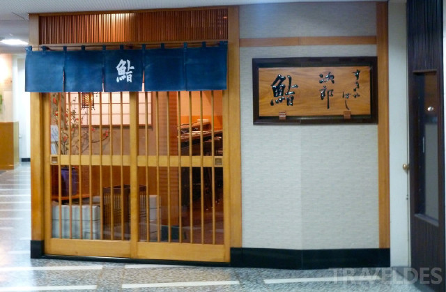

二郎的寿司店
二郎寿司的店面小的大概只容得下7，8个人，料理也只简单的只有各种口味的寿司，小野师傅在柜台后重复着简单却很需要功底的动作，将饭团拿捏成型，附上鱼肉，来回反复的捏合，那力道很难用语言来描述，必须经过反复的操作才可以达到标准，如娴熟的魔术般的手法一样，看似很轻松的就变出一个寿司来。
而实际这样娴熟的技法需要很多年的基本功，反复的重复，反正的练习才可以让这个手法一如天生般变成习惯。职人之道就是每天重复同样的工作，将一件事做到极致，便可获得成功，一如小野师傅说的：一旦你决定好职业，你必须全心投入工作之中，你必须爱自己的工作，千万不要有怨言，你必须穷尽一生磨练技能，这就是成功的秘诀。